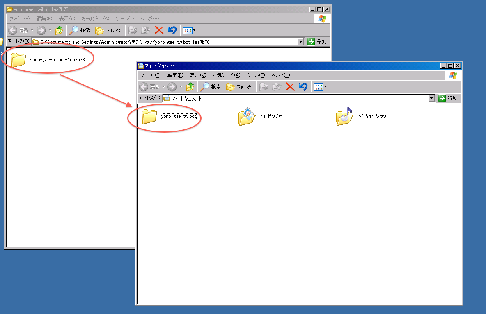
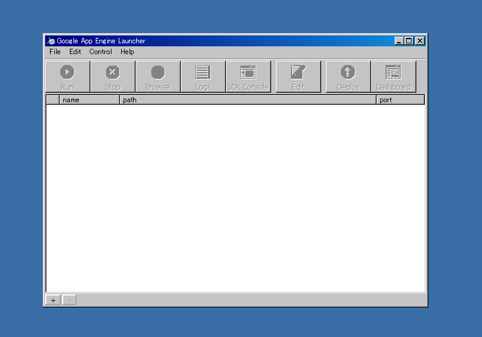
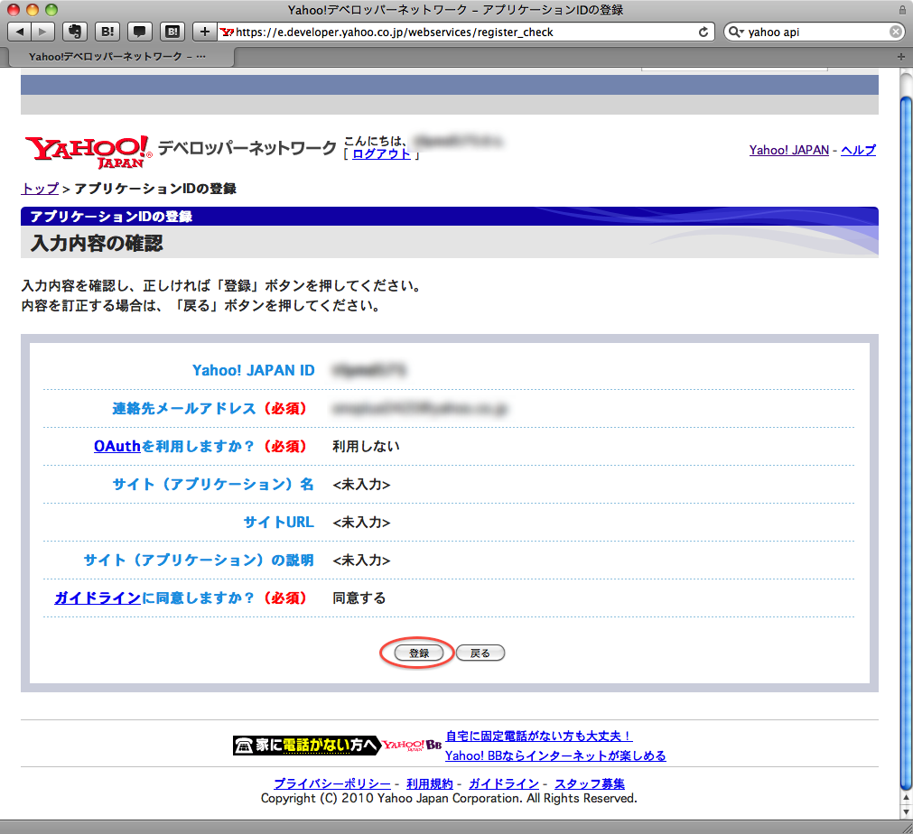

本勉強会の目的 Incremental
- ぼっとを作ろう！
- ……でも難しいんでしょう？
- 簡単にぼっとを作れるひな形を用意しました！！
- ただし、凝ったことはできないよ
- ぼっとを改造したい場合はプログラミングを習得しましょう！
本勉強会の流れ
- ぼっとの仕組みについて
- 下準備（環境設定）
- ひな形の説明
- プログラミングについて
ぼっとの仕組み

ぼっとを動かす環境
- 自宅PC
- 好きに設定できる
- PC の電源を落とすとぼっとも死ぬ
- Windows だと面倒かも
- レンタルサーバー
- 最低限の設定はされている
- 制限あり
- ぼっとを動かすための準備が必要
よのぼっとはどうやって動かしているか
- Google App Engine
- Google が提供するサービス
- プログラムを動かす環境
- 無料
- 登録が必要
- 自分の PC にも設定が必要
- Google が提供するサービス
- 今回は Google App Engine を利用してぼっとを作成します
下準備（サービスへの登録） Incremental
- Google のアカウント作成
- Gmail の設定（あると便利）
- Google App Engine への登録
- 携帯のメールアドレスが必要
- 携帯のメールアドレスが必要
- Gmail の設定（あると便利）
- Twitter のアカウント作成
- メールアドレスが必要
- メールアドレスが必要
- Twitter のアプリケーション登録
Google のアカウント作成

Google のアカウント作成

Gmail の設定 Incremental
たしか Google のアカウント持ってたら使えたと思います
- なぜ Gmail か？
- Twitter アカウント作成にはメールアドレスが必要
- 通常は 1 メールアドレスで 1 アカウント
- Gmail だと 1 メールアドレスでいくらでもアカウントが作成できます
- 作り方
- 例: yono@gmail.com というメールアドレスを使う場合
- Twitter 登録時に yono+bot@gmail.com というアドレスを入力します
- これだけ
- + 以降の文字を変えればいくらでもアカウントが作れます
Twitter のアカウント作成

Twitter のアプリケーション登録
ぼっと用のアカウントでログインし、画面上部の
「設定」をクリック

Twitter のアプリケーション登録
「連携アプリ」をクリック

Twitter のアプリケーション登録
赤丸で囲まれた部分の「こちら」をクリック

Twitter のアプリケーション登録
「新しいアプリケーションを追加」をクリック

Twitter のアプリケーション登録

Twitter のアプリケーション登録
「アプリケーションの種類」は「クライアントアプリケーション」を選択
「Default Access type:」は「Read & Write」を選択
それ以外は特に入力する必要はありません

下準備（ソフトウェアのインストール）
- Python のインストール
- プログラミング言語
- よのぼっとはこの言語で書かれています
- Google App Engine SDK のインストール
- Google App Engine で開発するためのツール
- サクラエディタのインストール
- ファイルを編集する際に使います
Python のダウンロード
http://www.python.org/download/releases/2.5.4/
お使いのPCに合ったインストーラをダウンロードしてください

Python のインストール
通常のアプリケーションのインストーラと同様です。
特に設定変更する箇所はありません

Python のインストール
特に設定変更する箇所はありません

Python のインストール
特に設定変更する箇所はありません

Python のインストール
Finish をクリックしてインストールを完了します

Google App Engine SDK のダウンロード
http://code.google.com/intl/ja/appengine/downloads.html
「GoogleAppEngine-1.3.7.msi」をクリック

Google App Engine SDK のインストール
通常のアプリケーションのインストーラと同様です。
特に設定変更する箇所はありません

Google App Engine SDK のインストール
I accept… にチェックを入れて Next をクリック

Google App Engine SDK のインストール
特に設定変更する箇所はありません

Google App Engine SDK のインストール
Install をクリックしてインストールを完了します

サクラエディタのインストール
http://mofmof.nsf.tc/soft/sakura_unicode/
sakuraW_r1428.zip をクリックしてダウンロード
サクラエディタのインストール
ダウンロードしてファイルを展開するとsakuraWというアプリケーションが 入っています。
サクラエディタのインストール
ダブルクリックして一度起動すると、右クリックメニューに [SAKURAで開く]が追加されます。
サクラエディタのインストール
ファイルを右クリックして[SAKURAで開く]を選択すると サクラエディタでファイルを開くことができます。
サクラエディタのインストール
以降、テキストファイルを編集する際はこのアプリケーションを 使用します。
ぼっとひな形の説明
- 二種類のつぶやきパターン
- 自動的に生成した文章をポスト
- よのぼっとと同じ
- ついったーのアカウントを基に作成
- あらかじめ用意した文章をポスト
- ファイルに書かれた文章をランダムにポスト
- 自動的に生成した文章をポスト
- リプライに対する返信
- ON, OFF の切り替え
ぼっとひな形を使うまでの準備
- OAuth のキー入手
- ツールを入手し、動作確認
- アップロードしてぼっととして動かす
OAuth とは
- Twitter が扱う認証形式
- パスワードの代わりに四種類のキーを使う
- consumer_key（アプリケーションごと）
- consumer_secret（アプリケーションごと）
- access_token（ユーザごと）
- access_token_secret（ユーザごと）
- consumer_key（アプリケーションごと）
- パスワードを教えないのでよいのでより安全
- ただし手順が少し面倒
OAuth の手順
- 説明
- (1) ユーザがサービスの利用申請をする
- (2) サービスが Twitter にユーザアカウントの利用許可を求める
- (3) Twitter がユーザに確認し、OK であれば PIN 番号を渡す
- (4) ユーザはサービスに PIN 番号を伝える
- (5) サービスは Twitter に PIN 番号を伝える
- (6) access_token, access_token_secret が渡される

キーを取得するためには
- ぼっとを動かすためには前述の四種類のキーが必要です
- 前述の手順だと面倒なので、Webサイトからダウンロードする方法を使います
四つのキーを取得
http://dev.twitter.com にアクセス

四つのキーを取得
Sign In（ぼっとのユーザ名とパスワード入力）

四つのキーを取得
[Your apps] をクリック

四つのキーを取得
先ほど作成したアプリケーションを選択

四つのキーを取得
画面下部へスクロール

四つのキーを取得
consumer_key と consumer_secret を記録しておいてください

四つのキーを取得
画面上部へ戻って[My Access Token]をクリック
四つのキーを取得
access_token と access_token_secret を記録しておいてください

ぼっとをダウンロードし、動かしてみる
ぼっとをダウンロードし、動かしてみる
ZIP をダウンロードする
ぼっとをダウンロードし、動かしてみる
- ダウンロードしたファイルを展開する
- 中にフォルダが入っているので、取り出して My Documents 以下に置く （絶対パスに日本語が含まれるとぼっとが動作しません）

ぼっとをダウンロードし、動かしてみる
Google App Engine Launcher を開く 
ぼっとをダウンロードし、動かしてみる
[File] - [Add Existing Application] をクリック
ぼっとをダウンロードし、動かしてみる
Application 選択画面が表示される
ぼっとをダウンロードし、動かしてみる
さきほど取り出したフォルダを選択し、OK をクリック
ぼっとをダウンロードし、動かしてみる
Add をクリック
ぼっとをダウンロードし、動かしてみる
左上の [Run] をクリック
ぼっとをダウンロードし、動かしてみる
左側のアイコンが変わったのを確認
ぼっとをダウンロードし、動かしてみる
Browse をクリックして動いているか確認する
ぼっとをダウンロードし、動かしてみる
Hello World! と表示されたら成功
ぼっとをダウンロードし、動かしてみる
- 先ほど取り出したフォルダを開きます
- config.ini.sample というファイルをコピーして、 config.ini というファイルを作ります
ぼっとをダウンロードし、動かしてみる
- 先程保存した4つのキーを入力し、保存します
ぼっとをダウンロードし、動かしてみる
ブラウザで http://localhost:8080/tweet にアクセスします

ぼっとをダウンロードし、動かしてみる
- 新しいウィンドウ（タブ）を開き、 http://twitter.com/<ぼっとのアカウント> を開きます
- つぶやきが投稿されていたら成功です
ぼっとのファイル一覧
- 編集するファイル
- app.yaml -> GAE の設定
- config.ini -> ぼっとの設定
- cron.yaml -> 発言する間隔、reply に反応する間隔の設定
- main.py -> ぼっと本体
- sentence.txt -> ぼっとの発言が書かれたファイル
- app.yaml -> GAE の設定
- 特に触らないでよいファイル
- lib -> ぼっと用のライブラリ
- twilog -> 同上
- twoauth -> 同上
- .gitignore -> Git（バージョン管理システム）用のファイル
- index.yaml -> GAE 用。自動生成される
- markov.py -> ぼっと用のライブラリ
- README.mkdn -> 説明書
ぼっとの機能説明
- 機能
- ツイートを投稿する
以下の二つから選択できます- 1. ファイル（sentence.txt）に書かれた文章をランダムにツイート
- 2. マルコフ連鎖により自動生成した文章をツイート
デフォルトは 1. です
- リプライに対して返信する
- ツイートを投稿する
ファイル中の文章をランダムにツイート
sentence.txt に書かれた文をランダムにツイートします。
文の区切り文字は % です。
例を以下に示します。
「こんにちは」「ねむい」「あつい」のいずれかをランダムに ツイートします。
こんにちは % ねむい % あつい
ぼっとのつぶやく間隔を変更する
cron.yaml を開いて以下の部分を変更
cron: - description: tweet url: /tweet # ツイートの間隔 schedule: every 15 minutes # <- ここ
15 となっている部分がつぶやく間隔（単位: 分）
この部分を変更すると、つぶやく間隔が変更されます。
注: 半角で入力すること
マルコフ連鎖によるツイート
- 機能
- 特定のついったーアカウントの発言を元に文章を生成します。
- twilog から発言を収集します。
- 設定を変更するには
config.ini を開いて以下の部分を変更[bot] tweet_type = 1 # <- ここ reply = True
- tweet_type = 1 だと sentence.txt を使用
- tweet_type = 2 だとマルコフ連鎖を使用
マルコフ連鎖によるツイート
- 発言を収集するユーザを選択する
config.ini を開いて以下の部分を変更[twilog] original_id = # <- ここ
対象ユーザの Twitter ID を記入する。
例:
[twilog] original_id = yono
マルコフ連鎖によるツイート
- 事前準備
マルコフ連鎖によるツイートを行うためには事前に Yahoo!での登録が必要です。
Yahoo! Japan ID を持ってない場合は別途登録が必要です。
マルコフ連鎖によるツイート
マルコフ連鎖によるツイート
まずはログインします
マルコフ連鎖によるツイート
IDとパスワードを入力してログイン
マルコフ連鎖によるツイート
メールアドレスは Yahoo のアドレスが選択済みになってます
マルコフ連鎖によるツイート
OAuth: 利用しない、ガイドライン: 同意する、を選択
マルコフ連鎖によるツイート
登録をクリック 
マルコフ連鎖によるツイート
アプリケーションIDを記録しておく
マルコフ連鎖によるツイート
- アプリケーションIDを記入
config.ini を開いて以下の部分にアプリケーションIDを記入[yahoo] appid = # <- ここ
マルコフ連鎖によるツイート
- 今までの発言データを収集（一括解析）
これまでに発言データを大量に集めている場合は、それらのデータをまとめて収集することができます。
ぼっとを起動した状態で http://localhost:8080/learn_tweet_all にアクセスしてみてください。
また、事前に Twilog (http://twilog.org) にデータが保存されているか 確認しておきましょう